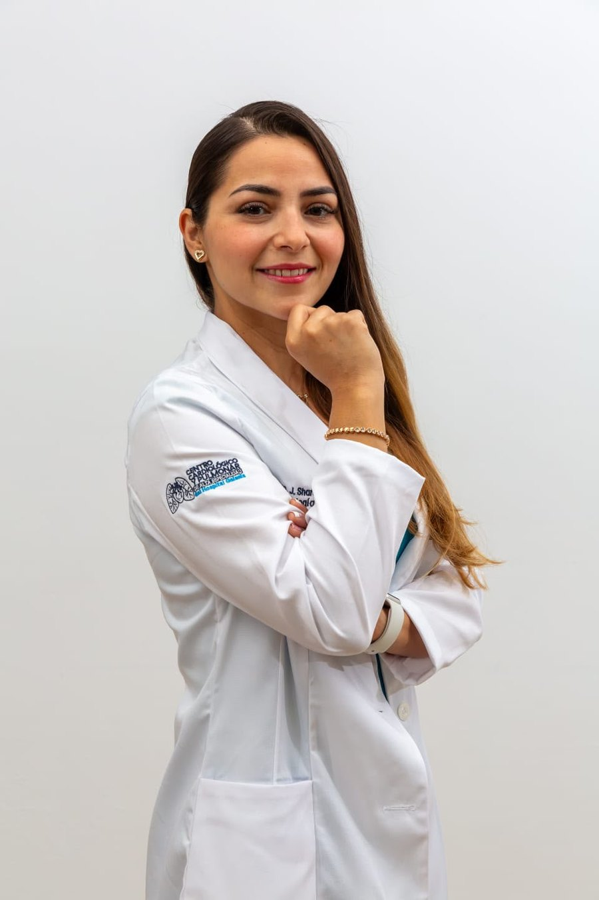

Dra. Sharon Valencia Álvarez
Cardióloga y Ecocardiografista
Formación
Médico General
Facultad de Medicina, Universidad Nacional Autónoma de México
La facultad de medicina de la universidad pública nacional de México.
Especialidad en Cardiología Clínica de Adultos
Instituto Nacional de Cardiología "Ignacio Chávez"
Uno de los Institutos Nacionales de Salud de México, dedicado por completo al corazón.
Alta Especialidad en Ecocardiografía de Adultos
Instituto Nacional de Cardiología "Ignacio Chávez"
Formación adicional que cursó en el mismo instituto, después de terminar la especialidad en cardiología.
Certificación
Recertificada
Consejo Nacional de Cardiología
Significa que volvió a evaluarse ante el consejo para mantener vigente su certificación.
Trayectoria
Secretaria de la Mesa Directiva
Colegio de Cardiólogos de Quintana Roo
Cargo electo dentro del colegio que agrupa a los cardiólogos del estado.
Miembro
Centro Cardiológico y Pulmonar del Hospital Galenia
Donde atiende actualmente, en Cancún.
Qué atiendo
- Cardiología clínica
- Ecocardiograma transtorácico
- Ecocardiograma transesofágico
- Ecocardiograma de estrés
- Holter de 24 horas
- MAPA (monitoreo ambulatorio de presión arterial)
- Electrocardiograma
- Prueba de esfuerzo
- Valoración preoperatoria cardiovascular
Cédula Profesional 12505405
Tarjeta digital por Sharkitect Digital